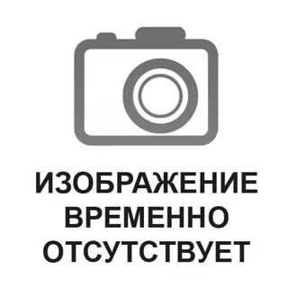
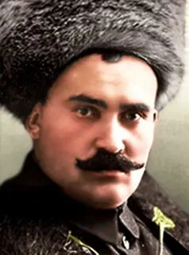

Базаново
| Основная информация | |
|---|---|
| Страна | 🇷🇺Россия |
| Координаты |
Широта: 50°57′08″ с.ш. (50.9522°) Долгота: 117°47′17″ в.д. (117.7881°) |
| Субъект Федерации | Забайкальский край |
| Муниципальный район | Алексанрово-Заводский |
| Сельское поселение | Ново-Акатуевское |
| История и география | |
| Основан | 1791 г. |
| Часовой пояс | UTC+9:00 |
| Население | |
| Население | 24 человека (2026) |
| Название жителей | Базановцы |
| Цифровые индефикаторы | |
| Почтовый индекс | 674640 |
| ОКАТО | 76204000004 |
| ОКТМО | 76604404111 |
| Номер ГКГН | 0021126 |
География деревни: Базаново
Село находится в центральной части района, на левом берегу реки Гуньгунжда, близ её впадения в реку Акатуй, на расстоянии 12 км от села Новый Акатуй, центра сельского поселения, и 11 км от села Александровский Завод, административного центра района.
Часовой пояс
Село Базаново, как и весь Забайкальский край, находится в часовой зоне МСК+6. Смещение применяемого времени относительно UTC составляет +9:00.
Население
| Численность населения | ||||
|---|---|---|---|---|
| 1989 | 2002 | 2010 | 2021 | 2026 |
| 158 | ↘111 | ↘82 | ↘58 | ↘24 |
Достопримечательности
В 3 километрах от села находится исторический памятник — братская могила 37 партизан, которые были расстреляны в 1919 году отрядами атамана Семёнова во время Гражданской войны.
Горное дело и добыча полезных ископаемых
Долина реки Гуньгунжда и прилегающие горы издавна славятся месторождениями полиметаллических руд. Ещё в XVIII веке здесь было открыто крупное месторождение серебро-свинцово-цинковых руд, что стало основой для основания села Базаново. В те времена в этих местах активно добывали серебро, свинец и цинк, а также золото.
В XIX–XX веках в долине и окрестных горах велась промышленная добыча золота. Старатели и крупные компании разрабатывали россыпные и коренные месторождения. После Октябрьской революции добыча была национализирована и продолжилась в рамках плановой экономики.
Сегодня вблизи села можно найти заброшенные шахты и отвалы — напоминание о бурной горнодобывающей истории этих мест. Геологические исследования показывают, что недра региона ещё содержат значительные запасы полиметаллов, и периодически ведутся работы по оценке новых месторождений.
Место положение многих объектов которые здесь называется вы можете посмотреть на Карте
Пожар 2015 года
13 апреля 2015 года стало чёрной датой в истории Базаново. В тот день из-за сильного шквального ветра степной пожар, приблизившийся от села Николаевка, за считанные часы практически полностью уничтожил деревню. Из более чем тридцати дворов уцелело лишь несколько домов. Без крыши над головой остались 63 человека.
Огонь распространялся с такой скоростью, что жители едва успевали покидать свои дома, забирая только самое необходимое. Многие в одночасье лишились всего нажитого имущества, домашнего скота и хозяйственных построек. Жители и пожарные пытались бороться с пламенем, но ураганный ветер не оставил им шансов. К счастью, благодаря своевременной эвакуации удалось избежать человеческих жертв.
Эта трагедия оставила глубокий след в сердцах местных жителей и стала символом стойкости базановцев, которые всем миром восстанавливали своё село.
Видео: последствия пожара в Базаново, 2015 год
🙏 Благодарность из Базаново
Жители Базаново передают слова благодарности Краснокаменцам. Это видео — тёплое поздравление от поколения, которое помнит деревенские корни и гордится своей малой родиной.
Видео: благодарность от жителей Базаново
Статьи — Базаново

